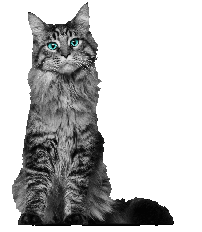

Cats which are not specific breeds can be referred to as 'domestic shorthair' (DSH) or 'domestic longhair' (DLH). The word 'cat' is also used for other felines. Felines are usually called either big cats or small cats. The big cats are well known: lions, tigers, leopards, jaguars, pumas, and cheetahs. There are small cats in most parts of the world, such as the lynx in northern Europe. The big cats and wild cats are not tame, and can be very dangerous. The domestic cat is a small, typically furry carnivorous mammal. They are often called house cats when kept as indoor pets.
About cats
Cats which are not specific breeds can be referred to as 'domestic shorthair' (DSH) or 'domestic longhair' (DLH). The word 'cat' is also used for other felines. Felines are usually called either big cats or small cats. The big cats are well known: lions, tigers, leopards, jaguars, pumas, and cheetahs. There are small cats in most parts of the world, such as the lynx in northern Europe. The big cats and wild cats are not tame, and can be very dangerous. The domestic cat is a small, typically furry carnivorous mammal. They are often called house cats when kept as indoor pets.